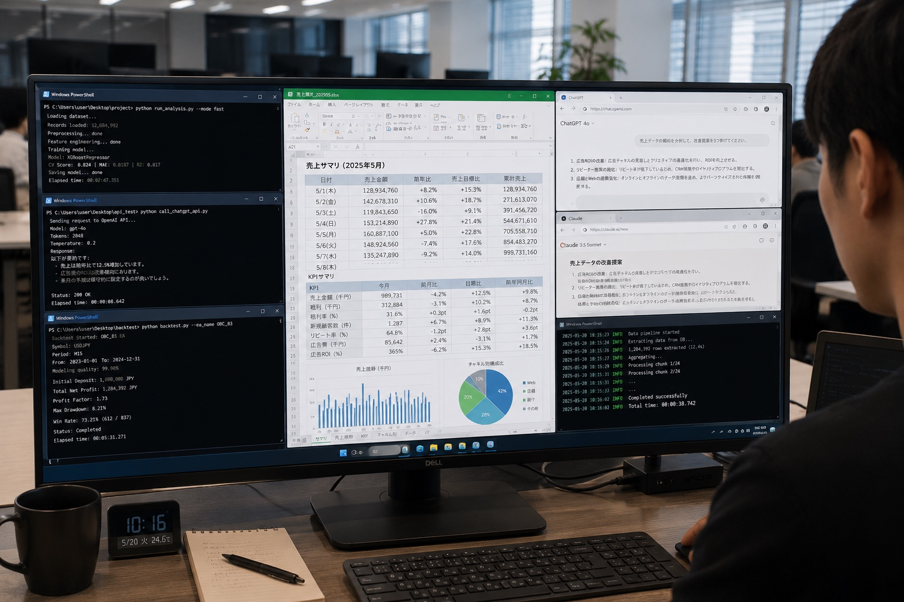

事業/AI活用研修
AI Skills Training
ツールを入れても、社員が使いこなせなければ意味がない。ChatGPT・Claude・Geminiを、実際の業務で“効く”状態にする実践型研修。ラジオ大阪をAI化した実行者が、現場で本当に使える方法だけを教えます。
Before
After
ChatGPT・Claude・Gemini、それぞれの得意を理解して業務に応じて選べる状態に。
議事録・書類作成・データ整理——研修中に自社の業務で実際に組み立てるから、翌日からすぐ使えます。
自社のAI活用計画書とAI利用ガイドラインを研修中に作成。社内展開にそのまま使えます。
人材開発支援助成金で、中小企業は費用の最大75%以上が助成。申請サポートも込み。
Why us
私たちは、出資先の〈ラジオ大阪（OBC）〉に自ら入り込み、紙の伝票も承認印も全廃。月2,500〜3,000件の仕訳をAIで自動処理し、AIアナウンサー〈弁天おび氏〉や番組AI要約「Dailyラジオ大阪」まで——放送局を丸ごとAI化しました。
「AIで何ができるか」を、教科書で学んだのではありません。自分たちの手で実際にやり切った。だから、現場で本当に効く使い方だけをお伝えできます。

Programs
組織の課題とフェーズに合わせて選べます。
AIで何ができるかを正しく理解し、自社業務での活用イメージを明確にする研修。ChatGPT・Claude・Geminiの3大AIを横断的に学び、座学で終わらせず、研修中に自社業務へのAI活用を実際に組み立てます。
品質管理・生産計画・検査工程でのAI活用。製造業に特化した実践型。
AI投資判断と推進体制の構築。「自社にAIをどう入れるか」を経営目線で。
業務の自動化を、AIエージェントで実現。DX推進担当向け。
Microsoft 365にAIを組み込み、日常のWordやExcel作業を効率化。
Curriculum
Deliverables
ワークショップで洗い出したAI活用アイデアを、部署別・優先度別に整理した実行計画。研修後すぐに社内展開できます。
自社のAI利用ルールの雛形。セキュリティ・著作権・データ取扱いを網羅した実用的なドキュメント。社内のAI利用の「共通ルール」になります。
Subsidy
この研修は、人材開発支援助成金（事業展開等リスキリング支援コース）の対象です。中小企業は経費助成 最大75%、加えて賃金助成も。
人材開発支援助成金（リスキリング支援コース）を適用した場合の試算です。11名以上は別途お見積りします。
¥445,000
※試算です。実際の支給額は審査により異なります。助成金は後払い（費用を先に全額お支払い、研修完了後に支給）。研修開始の1ヶ月前までに労働局へ計画届の提出が必要です。対象は雇用保険適用事業所の従業員（事業主・役員は対象外）。申請はサポートします。
Pricing
| 対面プラン | オンラインプラン | |
|---|---|---|
| 研修時間 | 11時間（2日間） | 11時間（全6回） |
| 形式 | 対面（講師派遣） | Zoomライブ |
| 税込料金 / 人 | ¥400,000 | ¥380,000 |
| 6〜10名割引 | ¥360,000 / 人 | ¥340,000 / 人 |
| 助成金適用後 | 約 ¥89,000 / 人 | 約 ¥85,000 / 人 |
※助成金適用後は中小企業・5名受講の場合の試算。11名以上は別途お見積もり。
FAQ
はい。単体で受けられます。「まずAIに慣れたい」という第一歩としても、経理システム導入の前段としても活用できます。
私たちは「研修屋」ではありません。自社出資先の放送局（ラジオ大阪）を実際にAI化した実行者です。教科書の知識ではなく、現場で効いた方法だけをお伝えします。
ChatGPT「だけ」ではありません。ChatGPT・Claude・Geminiの3大AIを横断的に学び、業務に応じて最適なAIを選べる力を身につけます。
後払いです。研修費用は先にお支払いいただき、研修完了後に助成金が支給されます。申請手続きのサポートも行います。
1名から可能です。6名以上でボリュームディスカウントがあります。
はい。業種・課題に合わせて調整します。製造業向け、経営者向けなど専門テーマもご用意しています。
Contact
売り込みはしません。御社の課題をうかがい、最適な研修プランを一緒に考えます。相談は無料です。
※ご相談だけでも歓迎です。しつこい営業はいたしません。